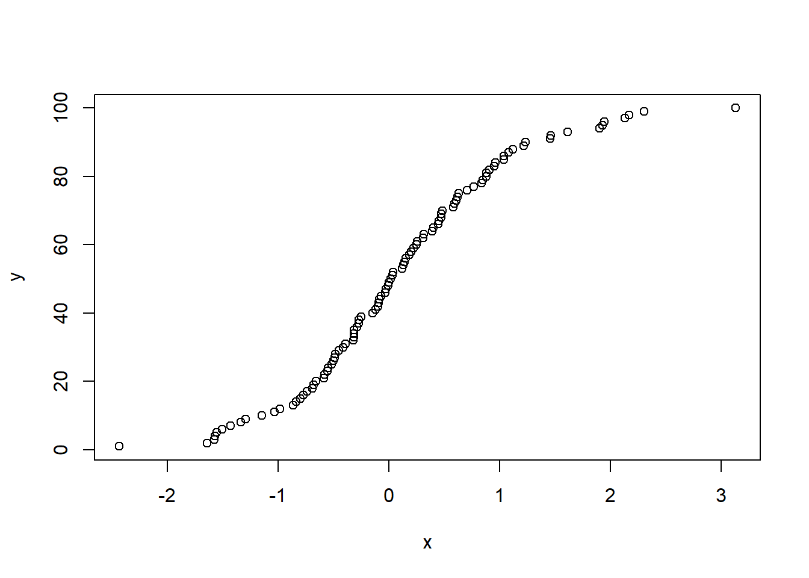

5.1 Ordinary Least Squares
The most fundamental model in statistics or econometric is a OLS linear regression. OLS = Maximum likelihood when the error term is assumed to be normally distributed.
Regression is still great if the underlying CEF (conditional expectation function) is not linear. Because regression has the following properties:
- For \(E[Y_i | X_{1i}, \dots, X_{Ki}] = a + \sum_{k=1}^K b_k X_{ki}\) (i.e., the CEF of \(Y_i\) on \(X_{1i}, \dots, X_{Ki}\) is linear, then the regression of \(Y_i\) on \(X_{1i}, \dots, X_{Ki}\) is the CEF
- For \(E[Y_i | X_{1i} , \dots, X_{Ki}]\) is a nonlinear function of the conditioning variables, the regression of \(Y_i\) on \(X_{1i}, \dots, X_{Ki}\) will give you the best linear approximation to the nonlinear CEF (i.e., minimize the expected squared deviation between the fitted values from the linear model and the CEF).
5.1.1 Simple Regression (Basic Model)
\[ Y_i = \beta_0 + \beta_1 X_i + \epsilon_i \]
- \(Y_i\): response (dependent) variable at i-th observation
- \(\beta_0,\beta_1\): regression parameters for intercept and slope.
- \(X_i\): known constant (independent or predictor variable) for i-th observation
- \(\epsilon_i\): random error term
\[ \begin{aligned} E(\epsilon_i) &= 0 \\ var(\epsilon_i) &= \sigma^2 \\ cov(\epsilon_i,\epsilon_j) &= 0 \text{ for all } i \neq j \end{aligned} \]
\(Y_i\) is random since \(\epsilon_i\) is:
\[ \begin{aligned} E(Y_i) &= E(\beta_0 + \beta_1 X_i + \epsilon_i) \\ &= E(\beta_0) + E(\beta_1 X_i) + E(\epsilon) \\ &= \beta_0 + \beta_1 X_i \end{aligned} \]
\[ \begin{aligned} var(Y_i) &= var(\beta_0 + \beta_1 X_i + \epsilon_i) \\ &= var(\epsilon_i) \\ &= \sigma^2 \end{aligned} \]
Since \(cov(\epsilon_i, \epsilon_j) = 0\) (uncorrelated), the outcome in any one trail has no effect on the outcome of any other. Hence, \(Y_i, Y_j\) are uncorrelated as well (conditioned on the \(X\)’s)
Note
Least Squares does not require a distributional assumption
Relationship between bivariate regression and covariance
Covariance between 2 variables:
\[ C(X_i, Y_i) = E[(X_i - E[X_i])(Y_i - E[Y_i])] \]
Which has the following properties
- \(C(X_i, X_i) = \sigma^2_X\)
- If either \(E(X_i) = 0 | E(Y_i) = 0\), then \(Cov(X_i, Y_i) = E[X_i Y_i]\)
- Given \(W_i = a + b X_i\) and \(Z_i = c + d Y_i\), then \(Cov(W_i, Z_i) = bdC(X_i, Y_i)\)
For the bivariate regression, the slope is
\[ \beta = \frac{Cov(Y_i, X_i)}{Var(X_i)} \]
To extend this to a multivariate case
\[ \beta_k = \frac{C(Y_i, \tilde{X}_{ki})}{Var(\tilde{X}_{ki})} \]
Where \(\tilde{X}_{ki}\) is the residual from a regression of \(X_{ki}\) on the \(K-1\) other covariates included in the model
And intercept
\[ \alpha = E[Y_i] - \beta E(X_i) \]
5.1.1.1 Estimation
Deviation of \(Y_i\) from its expected value:
\[ Y_i - E(Y_i) = Y_i - (\beta_0 + \beta_1 X_i) \]
Consider the sum of the square of such deviations:
\[ Q = \sum_{i=1}^{n} (Y_i - \beta_0 -\beta_1 X_i)^2 \]
\[ \begin{aligned} b_1 &= \frac{\sum_{i=1}^{n} (X_i - \bar{X})(Y_i - \bar{Y})}{\sum_{i=1}^{n}(X_i - \bar{X})^2} \\ b_0 &= \frac{1}{n}(\sum_{i=1}^{n}Y_i - b_1\sum_{i=1}^{n}X_i) = \bar{Y} - b_1 \bar{X} \end{aligned} \]
5.1.1.2 Properties of Least Least Estimators
\[ \begin{aligned} E(b_1) &= \beta_1 \\ E(b_0) &= E(\bar{Y}) - \bar{X}\beta_1 \\ E(\bar{Y}) &= \beta_0 + \beta_1 \bar{X} \\ E(b_0) &= \beta_0 \\ var(b_1) &= \frac{\sigma^2}{\sum_{i=1}^{n}(X_i - \bar{X})^2} \\ var(b_0) &= \sigma^2 (\frac{1}{n} + \frac{\bar{X}^2}{\sum (X_i - \bar{X})^2}) \end{aligned} \]
\(var(b_1) \to 0\) as more measurements are taken at more \(X_i\) values (unless \(X_i\) is at its mean value)
\(var(b_0) \to 0\) as \(n\) increases when the \(X_i\) values are judiciously selected.
Mean Square Error
\[ MSE = \frac{SSE}{n-2} = \frac{\sum_{i=1}^{n}e_i^2}{n-2} = \frac{\sum(Y_i - \hat{Y_i})^2}{n-2} \]
Unbiased estimator of MSE:
\[ E(MSE) = \sigma^2 \]
\[ \begin{aligned} s^2(b_1) &= \widehat{var(b_1)} = \frac{MSE}{\sum_{i=1}^{n}(X_i - \bar{X})^2} \\ s^2(b_0) &= \widehat{var(b_0)} = MSE(\frac{1}{n} + \frac{\bar{X}^2}{\sum_{i=1}^{n}(X_i - \bar{X})^2}) \end{aligned} \]
\[ \begin{aligned} E(s^2(b_1)) &= var(b_1) \\ E(s^2(b_0)) &= var(b_0) \end{aligned} \]
5.1.1.3 Residuals
\[ e_i = Y_i - \hat{Y} = Y_i - (b_0 + b_1 X_i) \]
- \(e_i\) is an estimate of \(\epsilon_i = Y_i - E(Y_i)\)
- \(\epsilon_i\) is always unknown since we don’t know the true \(\beta_0, \beta_1\)
\[ \begin{aligned} \sum_{i=1}^{n} e_i &= 0 \\ \sum_{i=1}^{n} X_i e_i &= 0 \end{aligned} \]
Residual properties
- \(E[e_i] =0\)
- \(E[X_i e_i] = 0\) and \(E[\hat{Y}_i e_i ] = 0\)
5.1.1.4 Inference
Normality Assumption
- Least Squares estimation does not require assumptions of normality.
- However, to do inference on the parameters, we need distributional assumptions.
- Inference on \(\beta_0,\beta_1\) and \(Y_h\) are not extremely sensitive to moderate departures from normality, especially if the sample size is large
- Inference on \(Y_{pred}\) is very sensitive to the normality assumptions.
Normal Error Regression Model
\[ Y_i \sim N(\beta_0+\beta_1X_i, \sigma^2) \]
5.1.1.4.1 \(\beta_1\)
Under the normal error model,
\[ b_1 \sim N(\beta_1,\frac{\sigma^2}{\sum_{i=1}^{n}(X_i - \bar{X})^2}) \]
A linear combination of independent normal random variable is normally distributed
Hence,
\[ \frac{b_1 - \beta_1}{s(b_1)} \sim t_{n-2} \]
A \((1-\alpha) 100 \%\) confidence interval for \(\beta_1\) is
\[ b_1 \pm t_{t-\alpha/2 ; n-2}s(b_1) \]
5.1.1.4.2 \(\beta_0\)
Under the normal error model, the sampling distribution for \(b_0\) is
\[ b_0 \sim N(\beta_0,\sigma^2(\frac{1}{n} + \frac{\bar{X}^2}{\sum_{i=1}^{n}(X_i - \bar{X})^2})) \]
Hence,
\[ \frac{b_0 - \beta_0}{s(b_0)} \sim t_{n-2} \] A \((1-\alpha)100 \%\) confidence interval for \(\beta_0\) is
\[ b_0 \pm t_{1-\alpha/2;n-2}s(b_0) \]
5.1.1.4.3 Mean Response
Let \(X_h\) denote the level of X for which we wish to estimate the mean response
- We denote the mean response when \(X = X_h\) by \(E(Y_h)\)
- A point estimator of \(E(Y_h)\) is \(\hat{Y}_h\):
\[ \hat{Y}_h = b_0 + b_1 X_h \] Note
\[ \begin{aligned} E(\bar{Y}_h) &= E(b_0 + b_1X_h) \\ &= \beta_0 + \beta_1 X_h \\ &= E(Y_h) \end{aligned} \] (unbiased estimator)
\[ \begin{aligned} var(\hat{Y}_h) &= var(b_0 + b_1 X_h) \\ &= var(\hat{Y} + b_1 (X_h - \bar{X})) \\ &= var(\bar{Y}) + (X_h - \bar{X})^2var(b_1) + 2(X_h - \bar{X})cov(\bar{Y},b_1) \\ &= \frac{\sigma^2}{n} + (X_h - \bar{X})^2 \frac{\sigma^2}{\sum(X_i - \bar{X})^2} \\ &= \sigma^2(\frac{1}{n} + \frac{(X_h - \bar{X})^2}{\sum_{i=1}^{n} (X_i - \bar{X})^2}) \end{aligned} \]
Since \(cov(\bar{Y},b_1) = 0\) due to the iid assumption on \(\epsilon_i\)
An estimate of this variance is
\[ s^2(\hat{Y}_h) = MSE (\frac{1}{n} + \frac{(X_h - \bar{X})^2}{\sum_{i=1}^{n}(X_i - \bar{X})^2}) \]
the sampling distribution for the mean response is
\[ \begin{aligned} \hat{Y}_h &\sim N(E(Y_h),var(\hat{Y_h})) \\ \frac{\hat{Y}_h - E(Y_h)}{s(\hat{Y}_h)} &\sim t_{n-2} \end{aligned} \]
A \(100(1-\alpha) \%\) CI for \(E(Y_h)\) is
\[ \hat{Y}_h \pm t_{1-\alpha/2;n-2}s(\hat{Y}_h) \]
5.1.1.4.4 Prediction of a new observation
Regarding the Mean Response, we are interested in estimating mean of the distribution of Y given a certain X.
Now, we want to predict an individual outcome for the distribution of Y at a given X. We call \(Y_{pred}\)
Estimation of mean response versus prediction of a new observation:
the point estimates are the same in both cases: \(\hat{Y}_{pred} = \hat{Y}_h\)
It is the variance of the prediction that is different; hence, prediction intervals are different than confidence intervals. The prediction variance must consider:
- Variation in the mean of the distribution of \(Y\)
- Variation within the distribution of \(Y\)
We want to predict: mean response + error
\[ \beta_0 + \beta_1 X_h + \epsilon \]
Since \(E(\epsilon) = 0\), use the least squares predictor:
\[ \hat{Y}_h = b_0 + b_1 X_h \]
The variance of the predictor is
\[ \begin{aligned} var(b_0 + b_1 X_h + \epsilon) &= var(b_0 + b_1 X_h) + var(\epsilon) \\ &= \sigma^2(\frac{1}{n} + \frac{(X_h - \bar{X})^2}{\sum_{i=1}^{n}(X_i - \bar{X})^2}) + \sigma^2 \\ &= \sigma^2(1+\frac{1}{n} + \frac{(X_h - \bar{X})^2}{\sum_{i=1}^{n}(X_i - \bar{X})^2}) \end{aligned} \]
An estimate of the variance is given by
\[ s^2(pred)= MSE (1+ \frac{1}{n} + \frac{(X_h - \bar{X})^2}{\sum_{i=1}^{n}(X_i - \bar{X})^2}) \]
and
\[ \frac{Y_{pred}-\hat{Y}_h}{s(pred)} \sim t_{n-2} \]
\(100(1-\alpha) \%\) prediction interval is
\[ \bar{Y}_h \pm t_{1-\alpha/2; n-2}s(pred) \]
The prediction interval is very sensitive to the distributional assumption on the errors, \(\epsilon\)
5.1.1.4.5 Confidence Band
We want to know the confidence interval for the entire regression line, so we can draw conclusions about any and all mean response fo the entire regression line \(E(Y) = \beta_0 + \beta_1 X\) rather than for a given response \(Y\)
Working-Hotelling Confidence Band
For a given \(X_h\), this band is
\[ \hat{Y}_h \pm W s(\hat{Y}_h) \] where \(W^2 = 2F_{1-\alpha;2,n-2}\), which is just 2 times the F-stat with 2 and \(n-2\) degrees of freedom
- the interval width will change with each \(X_h\) (since \(s(\hat{Y}_h)\) changes)
- the boundary values for this confidence band will always define a hyperbole containing the regression line
- will be smallest at \(X = \bar{X}\)
5.1.1.5 ANOVA
Partitioning the Total Sum of Squares: Consider the corrected Total sum of squares:
\[ SSTO = \sum_{i=1}^{n} (Y_i -\bar{Y})^2 \]
Measures the overall dispersion in the response variable
We use the term corrected because we correct for mean, the uncorrected total sum of squares is given by \(\sum Y_i^2\)
use \(\hat{Y}_i = b_0 + b_1 X_i\) to estimate the conditional mean for Y at \(X_i\)
\[ \begin{aligned} \sum_{i=1}^n (Y_i - \bar{Y})^2 &= \sum_{i=1}^n (Y_i - \hat{Y}_i + \hat{Y}_i - \bar{Y})^2 \\ &= \sum_{i=1}^n(Y_i - \hat{Y}_i)^2 + \sum_{i=1}^n(\hat{Y}_i - \bar{Y})^2 + 2\sum_{i=1}^n(Y_i - \hat{Y}_i)(\hat{Y}_i-\bar{Y}) \\ &= \sum_{i=1}^n(Y_i - \hat{Y}_i)^2 + \sum_{i=1}^n(\bar{Y}_i -\bar{Y})^2 \\ STTO &= SSE + SSR \\ \end{aligned} \]
where SSR is the regression sum of squares, which measures how the conditional mean varies about a central value.
The cross-product term in the decomposition is 0:
\[ \begin{aligned} \sum_{i=1}^n (Y_i - \hat{Y}_i)(\hat{Y}_i - \bar{Y}) &= \sum_{i=1}^{n}(Y_i - \bar{Y} -b_1 (X_i - \bar{X}))(\bar{Y} + b_1 (X_i - \bar{X})-\bar{Y}) \\ &= b_1 \sum_{i=1}^{n} (Y_i - \bar{Y})(X_i - \bar{X}) - b_1^2\sum_{i=1}^{n}(X_i - \bar{X})^2 \\ &= b_1 \frac{\sum_{i=1}^{n}(Y_i -\bar{Y})(X_i - \bar{X})}{\sum_{i=1}^{n}(X_i - \bar{X})^2} \sum_{i=1}^{n}(X_i - \bar{X})^2 - b_1^2\sum_{i=1}^{n}(X_i - \bar{X})^2 \\ &= b_1^2 \sum_{i=1}^{n}(X_i - \bar{X})^2 - b_1^2 \sum_{i=1}^{n}(X_i - \bar{X})^2 \\ &= 0 \end{aligned} \]
and
\[ \begin{aligned} SSTO &= SSR + SSE \\ (n-1 d.f) &= (1 d.f.) + (n-2 d.f.) \end{aligned} \]
| Source of Variation | Sum of Squares | df | Mean Square | F |
|---|---|---|---|---|
| Regression (model) | SSR | \(1\) | MSR = SSR/df | MSR/MSE |
| Error | SSE | \(n-2\) | MSE = SSE/df | |
| Total (Corrected) | SSTO | \(n-1\) |
\[ \begin{aligned} E(MSE) &= \sigma^2 \\ E(MSR) &= \sigma^2 + \beta_1^2 \sum_{i=1}^{n} (X_i - \bar{X})^2 \end{aligned} \]
- If \(\beta_1 = 0\), then these two expected values are the same
- if \(\beta_1 \neq 0\) then E(MSR) will be larger than E(MSE)
which means the ratio of these two quantities, we can infer something about \(\beta_1\)
Distribution theory tells us that if \(\epsilon_i \sim iid N(0,\sigma^2)\) and assuming \(H_0: \beta_1 = 0\) is true,
\[ \begin{aligned} \frac{MSE}{\sigma^2} &\sim \chi_{n-2}^2 \\ \frac{MSR}{\sigma^2} &\sim \chi_{1}^2 \text{ if } \beta_1=0 \end{aligned} \]
where these two chi-square random variables are independent.
Since the ratio of 2 independent chi-square random variable follows an F distribution, we consider:
\[ F = \frac{MSR}{MSE} \sim F_{1,n-2} \]
when \(\beta_1 =0\). Thus, we reject \(H_0: \beta_1 = 0\) (or \(E(Y_i)\) = constant) at \(\alpha\) if
\[ F > F_{1 - \alpha;1,n-2} \]
this is the only null hypothesis that can be tested with this approach.
Coefficient of Determination
\[ R^2 = \frac{SSR}{SSTO} = 1- \frac{SSE}{SSTO} \]
where \(0 \le R^2 \le 1\)
Interpretation: The proportionate reduction of the total variation in \(Y\) after fitting a linear model in \(X\).
It is not really correct to say that \(R^2\) is the “variation in \(Y\) explained by \(X\)”.
\(R^2\) is related to the correlation coefficient between \(Y\) and \(X\):
\[ R^2 = (r)^2 \]
where \(r= corr(x,y)\) is an estimate of the Pearson correlation coefficient. Also, note
\[ \begin{aligned} b_1 &= (\frac{\sum_{i=1}^{n}(Y_i - \bar{Y})^2}{\sum_{i=1}^{n} (X_i - \bar{X})^2})^{1/2} \\ r &= \frac{s_y}{s_x} r \end{aligned} \]
Lack of Fit
\(Y_{11},Y_{21}, \dots ,Y_{n_1,1}\): \(n_1\) repeat obs at \(X_1\)
\(Y_{1c},Y_{2c}, \dots ,Y_{n_c,c}\): \(n_c\) repeat obs at \(X_c\)
So, there are \(c\) distinct \(X\) values.
Let \(\bar{Y}_j\) be the mean over replicates for \(X_j\)
Partition the Error Sum of Squares:
\[ \begin{aligned} \sum_{i} \sum_{j} (Y_{ij} - \hat{Y}_{ij})^2 &= \sum_{i} \sum_{j} (Y_{ij} - \bar{Y}_j + \bar{Y}_j + \hat{Y}_{ij})^2 \\ &= \sum_{i} \sum_{j} (Y_{ij} - \bar{Y}_j)^2 + \sum_{i} \sum_{j} (\bar{Y}_j - \hat{Y}_{ij})^2 + \text{cross product term} \\ &= \sum_{i} \sum_{j}(Y_{ij} - \bar{Y}_j)^2 + \sum_j n_j (\bar{Y}_j- \hat{Y}_{ij})^2 \\ SSE &= SSPE + SSLF \\ \end{aligned} \]
- SSPE: “pure error sum of squares” has \(n-c\) degrees of freedom since we need to estimate \(c\) means
- SSLF: “lack of fit sum of squares” has \(c - 2\) degrees of freedom (the number of unique \(X\) values - number of parameters used to specify the conditional mean regression model)
\[ \begin{aligned} MSPE &= \frac{SSPE}{df_{pe}} = \frac{SSPE}{n-c} \\ MSLF &= \frac{SSLF}{df_{lf}} = \frac{SSLF}{c-2} \end{aligned} \]
The F-test for Lack-of-Fit tests
\[ \begin{aligned} H_0: Y_{ij} &= \beta_0 + \beta_1 X_i + \epsilon_{ij}, \epsilon_{ij} \sim iid N(0,\sigma^2) \\ H_a: Y_{ij} &= \alpha_0 + \alpha_1 X_i + f(X_i, Z_1,...) + \epsilon_{ij}^*,\epsilon_{ij}^* \sim iid N(0, \sigma^2) \end{aligned} \]
\(E(MSPE) = \sigma^2\) under either \(H_0\), \(H_a\)
\(E(MSLF) = \sigma^2 + \frac{\sum n_j(f(X_i,...))^2}{n-2}\) in general and
\(E(MSLF) = \sigma^2\) when \(H_0\) is true
We reject \(H_0\) (i.e., the model \(Y_i = \beta_0 + \beta_1 X_i + \epsilon_i\) is not adequate) if
\[ F = \frac{MSLF}{MSPE} > F_{1-\alpha;c-2,n-c} \]
Failing to reject \(H_0\) does not imply that \(H_0: Y_{ij} = \beta_0 + \beta_1 X_i + \epsilon_{ij}\) is exactly true, but it suggests that this model may provide a reasonable approximation to the true model.
| Source of Variation | Sum of Squares | df | Mean Square | F |
|---|---|---|---|---|
| Regression | SSR | \(1\) | MSR | MSR / MSE |
| Error | SSE | \(n-2\) | MSE | |
| Lack of fit | SSLF | \(c-2\) | MSLF | MSLF / MSPE |
| Pure Error | SSPE | \(n-c\) | MSPE | |
| Total (Corrected) | SSTO | \(n-1\) |
Repeat observations have an effect on \(R^2\):
- It is impossible for \(R^2\) to attain 1 when repeat obs. exist (SSE can’t be 0)
- The maximum \(R^2\) attainable in this situation:
\[ R^2_{max} = \frac{SSTo - SSPE}{SSTO} \]
- Not all levels of X need have repeat observations.
- Typically, when \(H_0\) is appropriate, one still uses MSE as the estimate for \(\sigma^2\) rather than MSPE, Since MSE has more degrees of freedom, sometimes people will pool these estimates.
Joint Inference
The confidence coefficient for both \(\beta_0\) and \(\beta_1\) considered simultaneously is \(\le \alpha\)
Let
- \(\bar{A}_1\) be the event that the first interval covers \(\beta_0\)
- \(\bar{A}_2\) be the event that the second interval covers \(\beta_1\)
\[ \begin{aligned} P(\bar{A}_1) &= 1 - \alpha \\ P(\bar{A}_2) &= 1 - \alpha \end{aligned} \]
The probability that both \(\bar{A}_1\) and \(\bar{A}_2\)
\[ \begin{aligned} P(\bar{A}_1 \cap \bar{A}_2) &= 1 - P(\bar{A}_1 \cup \bar{A}_2) \\ &= 1 - P(A_1) - P(A_2) + P(A_1 \cap A_2) \\ &\ge 1 - P(A_1) - P(A_2) \\ &= 1 - 2\alpha \end{aligned} \]
If \(\beta_0\) and \(\beta_1\) have separate 95% confidence intervals, the joint (family) confidence coefficient is at least \(1 - 2(0.05) = 0.9\). This is called a Bonferroni Inequality
We could use a procedure in which we obtained \(1-\alpha/2\) confidence intervals for the two regression parameters separately, then the joint (Bonferroni) family confidence coefficient would be at least \(1- \alpha\)
The \(1-\alpha\) joint Bonferroni confidence interval for \(\beta_0\) and \(\beta_1\) is given by calculating:
\[ \begin{aligned} b_0 &\pm B s(b_0) \\ b_1 &\pm B s(b_1) \end{aligned} \]
where \(B= t_{1-\alpha/4;n-2}\)
Interpretation: If repeated samples were taken and the joint \((1-\alpha)\) intervals for \(\beta_0\) and \(\beta_1\) were obtained, \((1-\alpha)100\)% of the joint intervals would contain the true pair \((\beta_0, \beta_1)\). That is, in \(\alpha \times 100\)% of the samples, one or both intervals would not contain the true value.
- The Bonferroni interval is conservative. It is a lower bound and the joint intervals will tend to be correct more than \((1-\alpha)100\)% of the time (lower power). People usually consider a larger \(\alpha\) for the Bonferroni joint tests (e.g, \(\alpha=0.1\))
- The Bonferroni procedure extends to testing more than 2 parameters. Say we are interested in testing \(\beta_0,\beta_1,..., \beta_{g-1}\) (g parameters to test). Then, the joint Bonferroni interval is obtained by calculating the \((1-\alpha/g)\) 100% level interval for each separately.
- For example, if \(\alpha = 0.05\) and \(g=10\), each individual test is done at the \(1- \frac{.05}{10}\) level. For 2-sided intervals, this corresponds to using \(t_{1-\frac{0.05}{2(10)};n-p}\) in the CI formula. This procedure works best if g is relatively small, otherwise the intervals for each individual parameter are very wide and the test is way too conservative.
- \(b_0,b_1\) are usually correlated (negatively if \(\bar{X} >0\) and positively if \(\bar{X}<0\))
- Other multiple comparison procedures are available.
5.1.1.6 Assumptions
- Linearity of the regression function
- Error terms have constant variance
- Error terms are independent
- No outliers
- Error terms are normally distributed
- No Omitted variables
5.1.1.7 Diagnostics
Constant Variance
- Plot residuals vs. X
Outliers
plot residuals vs. X
box plots
stem-leaf plots
scatter plots
We could use standardize the residuals to have unit variance. These standardized residuals are called studentized residuals:
\[ r_i = \frac{e_i -\bar{e}}{s(e_i)} = \frac{e_i}{s(e_i)} \]
A simplified standardization procedure gives semi-studentized residuals:
\[ e_i^* = \frac{e_i - \bar{e}}{\sqrt{MSE}} = \frac{e_i}{\sqrt{MSE}} \]
Non-independent of Error Terms
- plot residuals vs. time
Residuals \(e_i\) are not independent random variables because they involve the fitted values \(\hat{Y}_i\), which are based on the same fitted regression function.
If the sample size is large, the dependency among \(e_i\) is relatively unimportant.
To detect non-independence, it helps to plot the residual for the \(i\)-th response vs. the \((i-1)\)-th
Non-normality of Error Terms
to detect non-normality (distribution plots of residuals, box plots of residuals, stem-leaf plots of residuals, normal probability plots of residuals)
- Need relatively large sample sizes.
- Other types of departure affect the distribution of the residuals (wrong regression function, non-constant error variance,…)
5.1.1.7.1 Objective Tests of Model Assumptions
Normality
- Use Methods based on empirical cumulative distribution function to test on residuals.
Constancy of error variance
5.1.1.8 Remedial Measures
If the simple linear regression is not appropriate, one can:
- more complicated models
- transformations on \(X\) and/or \(Y\) (may not be “optimal” results)
Remedial measures based on deviations:
Non-linearity:
- Transformations
- more complicated models
Non-constant error variance:
Correlated errors:
- serially correlated error models (times series)
Non-normality
Additional variables: multiple regression.
Outliers:
- Robust estimation.
5.1.1.8.1 Transformations
use transformations of one or both variables before performing the regression analysis.
The properties of least-squares estimates apply to the transformed regression, not the original variable.
If we transform the Y variable and perform regression to get:
\[ g(Y_i) = b_0 + b_1 X_i \]
Transform back:
\[ \hat{Y}_i = g^{-1}(b_0 + b_1 X_i) \]
\(\hat{Y}_i\) will be biased. we can correct this bias.
Box-Cox Family Transformations
\[ Y'= Y^{\lambda} \]
where \(\lambda\) is a parameter to be determined from the data.
| \(\lambda\) | \(Y'\) |
|---|---|
| 2 | \(Y^2\) |
| 0.5 | \(\sqrt{Y}\) |
| 0 | \(ln(Y)\) |
| -0.5 | \(1/\sqrt{Y}\) |
| -1 | \(1/Y\) |
To pick \(\lambda\), we can do estimation by:
- trial and error
- maximum likelihood
- numerical search
Variance Stabilizing Transformations
A general method for finding a variance stabilizing transformation, when the standard deviation is a function of the mean, is the delta method - an application of a Taylor series expansion.
\[ \sigma = \sqrt{var(Y)} = f(\mu) \]
where \(\mu = E(Y)\) and \(f(\mu)\) is some smooth function of the mean.
Consider the transformation \(h(Y)\). Expand this function in a Taylor series about \(\mu\). Then,
\[ h(Y) = h(\mu) + h'(\mu)(Y-\mu) + \text{small terms} \]
we want to select the function h(.) so that the variance of h(Y) is nearly constant for all values of \(\mu= E(Y)\):
\[ \begin{aligned} const &= var(h(Y)) \\ &= var(h(\mu) + h'(\mu)(Y-\mu)) \\ &= (h'(\mu))^2 var(Y-\mu) \\ &= (h'(\mu))^2 var(Y) \\ &= (h'(\mu))^2(f(\mu))^2 \\ \end{aligned} \]
we must have,
\[ h'(\mu) \propto \frac{1}{f(\mu)} \]
then,
\[ h(\mu) = \int\frac{1}{f(\mu)}d\mu \]
Example: For the Poisson distribution: \(\sigma^2 = var(Y) = E(Y) = \mu\)
Then,
\[ \begin{aligned} \sigma = f(\mu) &= \sqrt{mu} \\ h'(\mu) &\propto \frac{1}{\mu} = \mu^{-.5} \end{aligned} \]
Then, the variance stabilizing transformation is:
\[ h(\mu) = \int \mu^{-.5} d\mu = \frac{1}{2} \sqrt{\mu} \]
hence, \(\sqrt{Y}\) is used as the variance stabilizing transformation.
If we don’t know \(f(\mu)\)
- Trial and error. Look at residuals plots
- Ask researchers about previous studies or find published results on similar experiments and determine what transformation was used.
- If you have multiple observations \(Y_{ij}\) at the same X values, compute \(\bar{Y}_i\) and \(s_i\) and plot them
If \(s_i \propto \bar{Y}_i^{\lambda}\) then consider \(s_i = a \bar{Y}_i^{\lambda}\) or \(ln(s_i) = ln(a) + \lambda ln(\bar{Y}_i)\). So regression the natural log of \(s_i\) on the natural log of \(\bar{Y}_i\) gives \(\hat{a}\) and \(\hat{\lambda}\) and suggests the form of \(f(\mu)\) If we don’t have multiple obs, might still be able to “group” the observations to get \(\bar{Y}_i\) and \(s_i\).
| Transformation | Situation | Comments |
|---|---|---|
| \(\sqrt{Y}\) | \(var(\epsilon_i) = k E(Y_i)\) | counts from Poisson dist |
| \(\ sqrt{Y} + \sqrt{Y+1}\) | \(var(\epsilon_i) = k E(Y_i)\) | small counts or zeroes |
| \(log(Y)\) | \(var(\epsilon_i) = k (E(Y_i))^2\) | positive integers with wide range |
| \(log(Y+1)\) | \(var(\epsilon_i) = k(E(Y_i))^2\) | some counts zero |
| 1/Y | \(var(\epsilon_i) = k(E(Y_i))^4\) | most responses near zero, others large |
| \(arcsin(\sqrt{Y})\) | \(var(\epsilon_i) = k E(Y_i)(1-E(Y_i))\) | data are binomial proportions or % |
5.1.2 Multiple Linear Regression
Geometry of Least Squares
\[ \begin{aligned} \mathbf{\hat{y}} &= \mathbf{Xb} \\ &= \mathbf{X(X'X)^{-1}X'y} \\ &= \mathbf{Hy} \end{aligned} \]
sometimes \(\mathbf{H}\) is denoted as \(\mathbf{P}\).
\(\mathbf{H}\) is the projection operator.
\[
\mathbf{\hat{y}= Hy}
\]
is the projection of y onto the linear space spanned by the columns of \(\mathbf{X}\) (model space). The dimension of the model space is the rank of \(\mathbf{X}\).
Facts:
- \(\mathbf{H}\) is symmetric (i.e., \(\mathbf{H} = \mathbf{H}'\))
- \(\mathbf{HH} = \mathbf{H}\)
\[ \begin{aligned} \mathbf{HH} &= \mathbf{X(X'X)^{-1}X'X(X'X)^{-1}X'} \\ &= \mathbf{X(X'X)^{-1}IX'} \\ &= \mathbf{X(X'X)^{-1}X'} \end{aligned} \]
- \(\mathbf{H}\) is an \(n \times n\) matrix with \(rank(\mathbf{H}) = rank(\mathbf{X})\)
- \(\mathbf{(I-H) = I - X(X'X)^{-1}X'}\) is also a projection operator. It projects onto the \(n - k\) dimensional space that is orthogonal to the \(k\) dimensional space spanned by the columns of \(\mathbf{X}\)
- \(\mathbf{H(I-H)=(I-H)H = 0}\)
Partition of uncorrected total sum of squares:
\[ \begin{aligned} \mathbf{y'y} &= \mathbf{\hat{y}'\hat{y} + e'e} \\ &= \mathbf{(Hy)'(Hy) + ((I-H)y)'((I-H)y)} \\ &= \mathbf{y'H'Hy + y'(I-H)'(I-H)y} \\ &= \mathbf{y'Hy + y'(I-H)y} \\ \end{aligned} \]
or partition for the corrected total sum of squares:
\[ \mathbf{y'(I-H_1)y = y'(H-H_1)y + y'(I-H)y} \]
where \(H_1 = \frac{1}{n} J = 1'(1'1)1\)
| Source | SS | df | MS | F |
|---|---|---|---|---|
| Regression | \(SSR = \mathbf{y' (H-\frac{1}{n}J)y}\) | \(p - 1\) | \(SSR/(p-1)\) | \(MSR /MSE\) |
| Error | \(SSE = \mathbf{y'(I - H)y}\) | \(n - p\) | \(SSE /(n-p)\) | |
| Total | \(\mathbf{y'y - y'Jy/n}\) | \(n -1\) |
Equivalently, we can express
\[ \mathbf{Y = X\hat{\beta} + (Y - X\hat{\beta})} \]
where
- \(\mathbf{\hat{Y} = X \hat{\beta}}\) = sum of a vector of fitted values
- \(\mathbf{e = ( Y - X \hat{\beta})}\) = residual
- \(\mathbf{Y}\) is the \(n \times 1\) vector in a n-dimensional space \(R^n\)
- \(\mathbf{X}\) is an \(n \times p\) full rank matrix. and its columns generate a \(p\)-dimensional subspace of \(R^n\). Hence, any estimator \(\mathbf{X \hat{\beta}}\) is also in this subspace.
We choose least squares estimator that minimize the distance between \(\mathbf{Y}\) and \(\mathbf{X \hat{\beta}}\), which is the orthogonal projection of \(\mathbf{Y}\) onto \(\mathbf{X\beta}\).
\[ \begin{aligned} ||\mathbf{Y} - \mathbf{X}\hat{\beta}||^2 &= \mathbf{||Y - X\hat{\beta}||}^2 + \mathbf{||X \hat{\beta}||}^2 \\ &= \mathbf{(Y - X\hat{\beta})'(Y - X\hat{\beta}) +(X \hat{\beta})'(X \hat{\beta})} \\ &= \mathbf{(Y - X\hat{\beta})'Y - (Y - X\hat{\beta})'X\hat{\beta} + \hat{\beta}' X'X\hat{\beta}} \\ &= \mathbf{(Y-X\hat{\beta})'Y + \hat{\beta}'X'X(XX')^{-1}X'Y} \\ &= \mathbf{Y'Y - \hat{\beta}'X'Y + \hat{\beta}'X'Y} \end{aligned} \]
where the norm of a \((p \times 1)\) vector \(\mathbf{a}\) is defined by:
\[ \mathbf{||a|| = \sqrt{a'a}} = \sqrt{\sum_{i=1}^p a^2_i} \]
Coefficient of Multiple Determination
\[ R^2 = \frac{SSR}{SSTO}= 1- \frac{SSE}{SSTO} \]
Adjusted Coefficient of Multiple Determination
\[ R^2_a = 1 - \frac{SSE/(n-p)}{SSTO/(n-1)} = 1 - \frac{(n-1)SSE}{(n-p)SSTO} \]
Sequential and Partial Sums of Squares:
In a regression model with coefficients \(\beta = (\beta_0, \beta_1,...,\beta_{p-1})'\), we denote the uncorrected and corrected SS by
\[ \begin{aligned} SSM &= SS(\beta_0, \beta_1,...,\beta_{p-1}) \\ SSM_m &= SS(\beta_0, \beta_1,...,\beta_{p-1}|\beta_0) \end{aligned} \]
There are 2 decompositions of \(SSM_m\):
- Sequential SS: (not unique -depends on order, also referred to as Type I SS, and is the default of
anova()in R)
\[ SSM_m = SS(\beta_1 | \beta_0) + SS(\beta_2 | \beta_0, \beta_1) + ...+ SS(\beta_{p-1}| \beta_0,...,\beta_{p-2}) \] - Partial SS: (use more in practice - contribution of each given all of the others)
\[ SSM_m = SS(\beta_1 | \beta_0,\beta_2,...,\beta_{p-1}) + ... + SS(\beta_{p-1}| \beta_0, \beta_1,...,\beta_{p-2}) \]
5.1.3 OLS Assumptions
- A1 Linearity
- A2 Full rank
- A3 Exogeneity of Independent Variables
- A4 Homoskedasticity
- A5 Data Generation (random Sampling)
- A6 Normal Distribution
5.1.3.1 A1 Linearity
\[\begin{equation} A1: y=\mathbf{x}\beta + \epsilon \tag{5.1} \end{equation}\]Not restrictive
- \(x\) can be nonlinear transformation including interactions, natural log, quadratic
With A3 (Exogeneity of Independent), linearity can be restrictive
5.1.3.1.1 Log Model
| Model | Form | Interpretation of \(\beta\) | In words |
|---|---|---|---|
| Level-Level | \(y =\beta_0+\beta_1x+\epsilon\) | \(\Delta y = \beta_1 \Delta x\) | A unit change in \(x\) will result in \(\beta_1\) unit change in \(y\) |
| Log-Level | \(ln(y) = \beta_0 + \beta_1x + \epsilon\) | \(\% \Delta y=100 \beta_1 \Delta x\) | A unit change in \(x\) result in 100 \(\beta_1\) % change in \(y\) |
| Level-Log | \(y = \beta _0 + \beta_1 ln (x) + \epsilon\) | \(\Delta y = (\beta_1/ 100)\%\Delta x\) | One percent change in \(x\) result in \(\beta_1/100\) units change in \(y\) |
| Log-Log | \(ln(y) = \beta_0 + \beta_1 l n(x) +\epsilon\) | \(\% \Delta y= \beta _1 \% \Delta x\) | One percent change in \(x\) result in \(\beta_1\) percent change in \(y\) |
5.1.3.1.2 Higher Orders
\(y=\beta_0 + x_1\beta_1 + x_1^2\beta_2 + \epsilon\)
\[ \frac{\partial y}{\partial x_1}=\beta_1 + 2x_1\beta_2 \]
- The effect of \(x_1\) on y depends on the level of \(x_1\)
- The partial effect at the average = \(\beta_1+2E(x_1)\beta_2\)
- Average Partial Effect = \(E(\beta_1 + 2x_1\beta_2)\)
5.1.3.2 A2 Full rank
\[\begin{equation} A2: rank(E(x'x))=k \tag{5.2} \end{equation}\]also known as identification condition
- columns of \(\mathbf{x}\) cannot be written as a linear function of the other columns
- which ensures that each parameter is unique and exists in the population regression equation
5.1.3.3 A3 Exogeneity of Independent Variables
\[\begin{equation} A3: E[\epsilon|x_1,x_2,...,x_k]=E[\epsilon|\mathbf{x}]=0 \tag{5.3} \end{equation}\]strict exogeneity
- also known as mean independence check back on Correlation and Independence
- by the Law of Iterated Expectations \(E(\epsilon)=0\), which can be satisfied by always including an intercept.
- independent variables do not carry information for prediction of \(\epsilon\)
- A3 implies \(E(y|x)=x\beta\), which means the conditional mean function must be a linear function of \(x\) A1 Linearity
5.1.3.3.1 A3a
Weaker Exogeneity Assumption
Exogeneity of Independent variables
A3a: \(E(\mathbf{x_i'}\epsilon_i)=0\)
\(x_i\) is uncorrelated with \(\epsilon_i\) Correlation and Independence
Weaker than mean independence A3
- A3 implies A3a, not the reverse
- No causality interpretations
- Cannot test the difference
5.1.3.4 A4 Homoskedasticity
\[\begin{equation} A4: Var(\epsilon|x)=Var(\epsilon)=\sigma^2 \tag{5.4} \end{equation}\]- Variation in the disturbance to be the same over the independent variables
5.1.3.5 A5 Data Generation (random Sampling)
\[\begin{equation} A5: {y_i,x_{i1},...,x_{ik-1}: i = 1,..., n} \tag{5.5} \end{equation}\]is a random sample
random sample mean samples are independent and identically distributed (iid) from a joint distribution of \((y,\mathbf{x})\)
-
- Strict Exogeneity: \(E(\epsilon_i|x_1,...,x_n)=0\). independent variables do not carry information for prediction of \(\epsilon\)
- Non-autocorrelation: \(E(\epsilon_i\epsilon_j|x_1,...,x_n)=0\) The error term is uncorrelated across the draws conditional on the independent variables \(\rightarrow\) \(A4: Var(\epsilon|\mathbf{X})=Var(\epsilon)=\sigma^2I_n\)
In times series and spatial settings, A5 is less likely to hold.
5.1.3.5.1 A5a
A stochastic process \(\{x_t\}_{t=1}^T\) is stationary if for every collection fo time indices \(\{t_1,t_2,...,t_m\}\), the joint distribution of
\[ x_{t_1},x_{t_2},...,x_{t_m} \]
is the same as the joint distribution of
\[ x_{t_1+h},x_{t_2+h},...,x_{t_m+h} \]
for any \(h \ge 1\)
- The joint distribution for the first ten observation is the same for the next ten, etc.
- Independent draws automatically satisfies this
A stochastic process \(\{x_t\}_{t=1}^T\) is weakly stationary if \(x_t\) and \(x_{t+h}\) are “almost independent” as h increases without bounds.
- two observation that are very far apart should be “almost independent”
Common Weakly Dependent Processes
- Moving Average process of order 1 (MA(1))
MA(1) means that there is only one period lag.
\[ \begin{aligned} y_t &= u_t + \alpha_1 u_{t-1} \\ E(y_t) &= E(u_t) + \alpha_1E(u_{t-1}) = 0 \\ Var(y_t) &= var(u_t) + \alpha_1 var(u_{t-1}) \\ &= \sigma^2 + \alpha_1^2 \sigma^2 \\ &= \sigma^2(1+\alpha_1^2) \end{aligned} \]
where \(u_t\) is drawn iid over t with variance \(\sigma^2\)
An increase in the absolute value of \(\alpha_1\) increases the variance
When the MA(1) process can be inverted (\(|\alpha|<1\) then
\[ u_t = y_t - \alpha_1u_{t-1} \]
called the autoregressive representation (express current observation in term of past observation).
We can expand it to more than 1 lag, then we have MA(q) process
\[ y_t = u_t + \alpha_1 u_{t-1} + ... + \alpha_q u_{t-q} \]
where \(u_t \sim WN(0,\sigma^2)\)
- Covariance stationary: irrespective of the value of the parameters.
- Invertibility when \(\alpha < 1\)
- The conditional mean of MA(q) depends on the q lags (long-term memory).
- In MA(q), all autocorrelations beyond q are 0.
\[ \begin{aligned} Cov(y_t,y_{t-1}) &= Cov(u_t + \alpha_1 u_{t-1},u_{t-1}+\alpha_1u_{t-2}) \\ &= \alpha_1var(u_{t-1}) \\ &= \alpha_1\sigma^2 \end{aligned} \]
\[ \begin{aligned} Cov(y_t,y_{t-2}) &= Cov(u_t + \alpha_1 u_{t-1},u_{t-2}+\alpha_{1}u_{t-3}) \\ &= 0 \end{aligned} \]
An MA models a linear relationship between the dependent variable and the current and past values of a stochastic term.
- Auto regressive process of order 1 (AR(1))
\[ y_t = \rho y_{t-1}+ u_t, |\rho|<1 \]
where \(u_t\) is drawn iid over t with variance \(\sigma^2\)
\[ \begin{aligned} Cov(y_t,y_{t-1}) &= Cov(\rho y_{t-1} + u-t,y_{t-1}) \\ &= \rho Var(y_{t-1}) \\ &= \rho \frac{\sigma^2}{1-\rho^2} \end{aligned} \]
\[ \begin{aligned} Cov(y_t,y_{t-h}) &= \rho^h \frac{\sigma^2}{1-\rho^2} \end{aligned} \]
Stationarity: in the continuum of t, the distribution of each t is the same
\[ \begin{aligned} E(y_t) &= E(y_{t-1}) = ...= E(y_0) \\ y_1 &= \rho y_0 + u_1 \end{aligned} \]
where the initial observation \(y_0=0\)
Assume \(E(y_t)=0\)
\[ \begin{aligned} y_t &= \rho^t y_{t-t} + \rho^{t-1}u_1 + \rho^{t-2}u_2 +...+ \rho u_{t-1} + u_t \\ &= \rho^t y_0 + \rho^{t-1}u_1 + \rho^{t-2}u_2 +...+ \rho u_{t-1} + u_t \end{aligned} \]
Hence, \(y_t\) is the weighted of all of the \(u_t\) time observations before. y will be correlated with all the previous observations as well as future observations.
\[ \begin{aligned} Var(y_t) &= Var(\rho y_{t-1} + u_t) \\ &= \rho^2 Var(y_{t-1}) + Var(u_t) + 2\rho Cov(y_{t-1}u_t) \\ &= \rho^2 Var(y_{t-1}) + \sigma^2 \end{aligned} \]
Hence,
\[ Var(y_t) = \frac{\sigma^2}{1-\rho^2} \]
to have Variance constantly over time, then \(\rho \neq 1\) or \(-1\).
Then stationarity requires \(\rho \neq 1\) or -1. weakly dependent process \(|\rho|<1\)
To estimate the AR(1) process, we use Yule-Walker Equation
\[ \begin{aligned} y_t &= \epsilon_t + \phi y_{t-1} \\ y_t y_{t-\tau} &= \epsilon_t y_{t-\tau} + \phi y_{t-1}y_{t-\tau} \end{aligned} \]
For \(\tau \ge 1\), we have
\[ \gamma \tau = \phi \gamma (\tau -1) \]
\[ \rho_t = \phi^t \]
when you generalize to \(p\)-th order autoregressive process, AR(p):
\[ y_t = \phi_1 y_{t-1} + \phi_2 y_{t-2} + ... + \phi_p y_{t-p} + \epsilon_t \]
AR(p) process is covariance stationary, and decay in autocorrelations.
When we combine MA(q) and AR(p), we have ARMA(p,q) process, where you can see seasonality. For example, ARMA(1,1)
\[ y_t = \phi y_{t-1} + \epsilon_t + \alpha \epsilon_{t-1} \]
Random Walk process
\[ y_t = y_0 + \sum_{s=1}^{t}u_t \]
- not stationary : when \(y_0 = 0\) then \(E(y_t)= 0\), but \(Var(y_t)=t\sigma^2\). Further along in the spectrum, the variance will be larger
- not weakly dependent: \(Cov(\sum_{s=1}^{t}u_s,\sum_{s=1}^{t-h}u_s) = (t-h)\sigma^2\). So the covariance (fixed) is not diminishing as h increases
Assumption A5a: \(\{y_t,x_{t1},..,x_{tk-1} \}\)
where \(t=1,...,T\) are stationary and weakly dependent processes.
Alternative Weak Law, Central Limit Theorem
If \(z_t\) is a weakly dependent stationary process with a finite first absolute moment and \(E(z_t) = \mu\), then
\[ T^{-1}\sum_{t=1}^{T}z_t \to^p \mu \]
If additional regulatory conditions hold (Greene 1990), then
\[ \sqrt{T}(\bar{z}-\mu) \to^d N(0,B) \]
where \(B= Var(z_t) + 2\sum_{h=1}^{\infty}Cov(z_t,z_{t-h})\)
5.1.3.6 A6 Normal Distribution
\[\begin{equation} A6: \epsilon|\mathbf{x}\sim N(0,\sigma^2I_n) \tag{5.6} \end{equation}\]The error term is normally distributed
From A1-A3, we have identification (also known as Orthogonality Condition) of the population parameter \(\beta\)
\[ \begin{aligned} y &= {x}\beta + \epsilon && \text{A1} \\ x'y &= x'x\beta + x'\epsilon && \text{} \\ E(x'y) &= E(x'x)\beta + E(x'\epsilon) && \text{} \\ E(x'y) &= E(x'x)\beta && \text{A3} \\ [E(x'x)]^{-1}E(x'y) &= [E(x'x)]^{-1}E(x'x)\beta && \text{A2} \\ [E(x'x)]^{-1}E(x'y) &= \beta \end{aligned} \]
\(\beta\) is the row vector of parameters that produces the best predictor of y we choose the min of \(\gamma\) :
\[ \underset{\gamma}{\operatorname{argmin}}E((y-x\gamma)^2) \]
First Order Condition
\[ \begin{aligned} \frac{\partial((y-x\gamma)^2)}{\partial\gamma}&=0 \\ -2E(x'(y-x\gamma))&=0 \\ E(x'y)-E(x'x\gamma) &=0 \\ E(x'y) &= E(x'x)\gamma \\ (E(x'x))^{-1}E(x'y) &= \gamma \end{aligned} \]
Second Order Condition
\[ \begin{aligned} \frac{\partial^2E((y-x\gamma)^2)}{\partial \gamma'^2}&=0 \\ E(\frac{\partial(y-x\partial)^2)}{\partial\gamma\partial\gamma'}) &= 2E(x'x) \end{aligned} \]
If A3 holds, then \(2E(x'x)\) is PSD \(\rightarrow\) minimum
5.1.4 Theorems
5.1.4.1 Frisch-Waugh-Lovell Theorem
\[ \mathbf{y=X\beta + \epsilon=X_1\beta_1+X_2\beta_2 +\epsilon} \]
Equivalently,
\[ \left( \begin{array} {cc} X_1'X_1 & X_1'X_2 \\ X_2'X_1 & X_2'X_2 \end{array} \right) \left( \begin{array} {c} \hat{\beta_1} \\ \hat{\beta_2} \end{array} \right) = \left( \begin{array}{c} X_1'y \\ X_2'y \end{array} \right) \]
Hence,
\[ \mathbf{\hat{\beta_1}=(X_1'X_1)^{-1}X_1'y - (X_1'X_1)^{-1}X_1'X_2\hat{\beta_2}} \]
- Betas from the multiple regression are not the same as the betas from each of the individual simple regression
- Different set of X will affect all the coefficient estimates.
- If \(X_1'X_2 = 0\) or \(\hat{\beta_2}=0\), then 1 and 2 do not hold.
5.1.4.2 Gauss-Markov Theorem
For a linear regression model
\[ \mathbf{y=X\beta + \epsilon} \]
Under A1, A2, A3, A4, OLS estimator defined as
\[ \hat{\beta} = \mathbf{(X'X)^{-1}X'y} \]
is the minimum variance linear (in \(y\)) unbiased estimator of \(\beta\)
Let \(\tilde{\beta}=\mathbf{Cy}\), be another linear estimator where \(\mathbf{C}\) is \(k \times n\) and only function of \(\mathbf{X}\)), then for it be unbiased,
\[ \begin{aligned} E(\tilde{\beta}|\mathbf{X}) &= E(\mathbf{Cy|X}) \\ &= E(\mathbf{CX\beta + C\epsilon|X}) \\ &= \mathbf{CX\beta} \end{aligned} \]
which equals the true parameter \(\beta\) only if \(\mathbf{CX=I}\)
Equivalently, \(\tilde{\beta} = \beta + \mathbf{C}\epsilon\) and the variance of the estimator is \(Var(\tilde{\beta}|\mathbf{X}) = \sigma^2\mathbf{CC'}\)
To show minimum variance,
\[ \begin{aligned} &=\sigma^2\mathbf{(C-(X'X)^{-1}X')(C-(X'X)^{-1}X')'} \\ &= \sigma^2\mathbf{(CC' - CX(X'X)^{-1})-(X'X)^{-1}X'C + (X'X)^{-1}X'X(X'X)^{-1})} \\ &= \sigma^2 (\mathbf{CC' - (X'X)^{-1}-(X'X)^{-1} + (X'X)^{-1}}) \\ &= \sigma^2\mathbf{CC'} - \sigma^2(\mathbf{X'X})^{-1} \\ &= Var(\tilde{\beta}|\mathbf{X}) - Var(\hat{\beta}|\mathbf{X}) \end{aligned} \]
Hierarchy of OLS Assumptions
| Identification Data Description | Unbiasedness Consistency | Gauss- Markov (BLUE) Asymptotic Inference (z and Chi-squared) | Classical LM (BUE) Small-sample Inference (t and F) |
|---|---|---|---|
| Variation in \(\mathbf{X}\) | Variation in \(\mathbf{X}\) | Variation in \(\mathbf{X}\) | Variation in \(\mathbf{X}\) |
| Random Sampling | Random Sampling | Random Sampling | |
| Linearity in Parameters | Linearity in Parameters | Linearity in Parameters | |
| Zero Conditional Mean | Zero Conditional Mean | Zero Conditional Mean | |
| \(\mathbf{H}\) homoskedasticity | \(\mathbf{H}\) homoskedasticity | ||
| Normality of Errors |
5.1.5 Variable Selection
depends on
- Objectives or goals
- Previously acquired expertise
- Availability of data
- Availability of computer software
Let \(P - 1\) be the number of possible \(X\) variables
5.1.5.1 Mallows’s \(C_p\) Statistic
(Mallows, 1973, Technometrics, 15, 661-675)
A measure of the predictive ability of a fitted model
Let \(\hat{Y}_{ip}\) be the predicted value of \(Y_i\) using the model with \(p\) parameters.
The total standardized mean square error of prediction is:
\[ \begin{aligned} \Gamma_p &= \frac{\sum_{i=1}^n E(\hat{Y}_{ip}-E(Y_i))^2}{\sigma^2} \\ &= \frac{\sum_{i=1}^n [E(\hat{Y}_{ip})-E(Y_i)]^2+\sum_{i=1}^n var(\hat{Y}_{ip})}{\sigma^2} \end{aligned} \]
the first term in the numerator is the (bias)^2 term and the 2nd term is the prediction variance term.
- bias term decreases as more variables are added to the model.
- if we assume the full model \((p=P)\) is the true model, then \(E(\hat{Y}_{ip}) - E(Y_i) = 0\) and the bias is 0.
- Prediction variance increase as more variables are added to the model \(\sum var(\hat{Y}_{ip}) = p \sigma^2\)
- thus, a tradeoff between bias and variance terns is achieved by minimizing \(\Gamma_p\).
- Since \(\Gamma_p\) is unknown (due to \(\beta\)). we use an estimate: \(C_p = \frac{SSE_p}{\hat{\sigma^2}}- (n-2p)\) which is an unbiased estimate of \(\Gamma_p\)
- As more variables are added to the model, the \(SSE_p\) decreases but 2p increases. where \(\hat{\sigma^2}=MSE(X_1,..,X_{P-1})\) the MSE with all possible X variables in the model.
- when there is no bias then \(E(C_p) \approx p\). Thus, good models have \(C_p\) close to p.
- Prediction: consider models with \(C_p \le p\)
- Parameter estimation: consider models with \(C_p \le 2p -(P-1)\). Fewer variables should be eliminated from the model to avoid excess bias in the estimates.
5.1.5.2 Akaike Information Criterion (AIC)
\[ AUC = n ln(\frac{SSE_p}{n}) + 2p \]
- increasing \(p\) (number of parameters) leads first-term decreases, and second-term increases.
- We want model with small values of AIC. If the AIC increases when a parameter is added to the model, that parameter is not needed.
- AIC represents a tradeoff between precision of fit against the number of parameters used.
5.1.5.3 Bayes (or Schwarz) Information Criterion
\[ BIC = n \ln(\frac{SSE_p}{n})+ (\ln n)p \]
The coefficient in front of p tends to penalize more heavily models with a larger number of parameters (as compared to AIC).
5.1.5.4 Prediction Error Sum of Squares (PRESS)
\[ PRESS_p = \sum_{i=1}^{n} (Y_i - \hat{Y}_{i(i)})^2 \]
where \(\hat{Y}_{i(i)}\) is the prediction of the i-th response when the i-th observation is not used, obtained for the model with p parameters.
- evaluates the predictive ability of a postulated model by omitting one observation at a time.
- We want small \(PRESS_p\) values
- It can be computationally intensive when you have large p.
5.1.5.5 Best Subsets Algorithm
- “leap and bounds” algorithm of (Furnival and Wilson 2000) combines comparison of SSE for different subset models with control over the sequence in which the subset regression are computed.
- Guarantees finding the best m subset regressions within each subset size with less computational burden than all possible subsets.
5.1.5.6 Stepwise Selection Procedures
The forward stepwise procedure:
- finds a plausible subset sequentially.
- at each step, a variable is added or deleted.
- criterion for adding or deleting is based on SSE, \(R^2\), t, or F-statistic.
Note:
- Instead of using exact F-values, computer packages usually specify the equivalent “significance” level. For example, SLE is the “significance” level to enter, and SLS is the “significance” level to stay. The SLE and SLS are guides rather than true tests of significance.
- The choice of SLE and SLS represents a balancing of opposing tendencies. Use of large SLE values tends to result in too many predictor variables; models with small SLE tend to be under-specified resulting in \(\sigma^2\) being badly overestimated.
- As for choice of SLE, can choose between 0.05 and 0.5.
- If SLE > SLS then a cycling pattern may occur. Although most computer packages can detect can stop when it happens. A quick fix: SLS = SLE /2 (Bendel and Afifi 1977).
- If SLE < SLS then the procedure is conservative and may lead variables with low contribution to be retained.
- Order of variable entry does not matter.
Automated Selection Procedures:
- Forward selection: Same idea as forward stepwise except it doesn’t test if variables should be dropped once enter. (not as good as forward stepwise).
- Backward Elimination: begin with all variables and identifies the one with the smallest F-value to be dropped.
5.1.6 Diagnostics
5.1.6.1 Normality of errors
could use Methods based on normal probability plot or Methods based on empirical cumulative distribution function
or plots such as

5.1.6.2 Influential observations/outliers
5.1.6.2.1 Hat matrix
\[ \mathbf{H = X(X'X)^{-1}} \]
where \(\mathbf{\hat{Y}= HY, e = (I-H)Y}\) and \(var(\mathbf{e}) = \sigma^2 (\mathbf{I-H})\)
- \(\sigma^2(e_i) = \sigma^2 (1-h_{ii})\), where \(h_{ii}\) is the \(i\)-th element of the main diagonal of \(\mathbf{H}\) (must be between 0 and 1).
- \(\sum_{i=1}^{n} h_{ii} = p\)
- \(cov(e_i,e_j) = -h_{ii}\sigma^2\) where \(i \neq j\)
- Estimate: \(s^2(e_i) = MSE (1-h_{ii})\)
- Estimate: \(\hat{cov}(e_i,e_j) = -h_{ij}(MSE)\); if model assumption are correct, this covariance is very small for large data sets.
- If \(\mathbf{x}_i = [1 X_{i,1} ... X_{i,p-1}]'\) (the vector of X-values for a given response), then \(h_{ii} = \mathbf{x_i'(X'X)^{-1}x_i}\) (depends on relative positions of the design points \(X_{i,1},...,X_{i,p-1}\))
5.1.6.2.2 Studentized Residuals
\[ \begin{aligned} r_i &= \frac{e_i}{s(e_i)} \\ r_i &\sim N(0,1) \end{aligned} \]
where \(s(e_i) = \sqrt{MSE(1-h_{ii})}\). \(r_i\) is called the studentized residual or standardized residual.
- you can use the semi-studentized residual before, \(e_i^*= e_i \sqrt{MSE}\). This doesn’t take into account the different variances for each \(e_i\).
We would want to see the model without a particular value. You delete the \(i\)-th case, fit the regression to the remaining \(n-1\) cases, get estimated responses for the \(i\)-th case, \(\hat{Y}_{i(i)}\), and find the difference, called the deleted residual:
\[ \begin{aligned} d_i &= Y_i - \hat{Y}_{i(i)} \\ &= \frac{e_i}{1-h_{ii}} \end{aligned} \]
we don’t need to recompute the regression model for each case
As \(h_{ii}\) increases, \(d_i\) increases.
\[ s^2(d_i)= \frac{MSE_{(i)}}{1-h_{ii}} \]
where \(MSE_{(i)}\) is the mean square error when the i-th case is omitted.
Let
\[ t_i = \frac{d_i}{s(d_i)} = \frac{e_i}{\sqrt{MSE_{(i)}(1-h_{ii})}} \]
be the studentized deleted residual, which follows a t-distribution with \(n-p-1\) df.
\[ (n-p)MSE = (n-p-1)MSE_{(i)}+ \frac{e^2_{i}}{1-h_{ii}} \]
hence, we do not need to fit regressions for each case and
\[ t_i = e_i (\frac{n-p-1}{SSE(1-h_{ii})-e^2_i})^{1/2} \]
The outlying \(Y\)-observations are those cases whose studentized deleted residuals are large in absolute value. If there are many residuals to consider, a Bonferroni critical value can be can (\(t_{1-\alpha/2n;n-p-1}\))
Outlying X Observations
Recall, \(0 \le h_{ii} \le 1\) and \(\sum_{i=1}^{n}h_{ii}=p\) (the total number of parameters)
A large \(h_{ii}\) indicates that the \(i\)-th case is distant from the center of all \(X\) observations (the leverage of the \(i\)-th case). That is, a large value suggests that the observation exercises substantial leverage in determining the fitted value \(\hat{Y}_i\)
We have \(\mathbf{\hat{Y}=HY}\), a linear combination of Y-values; \(h_{ii}\) is the weight of the observation \(Y_i\); so \(h_{ii}\) measures the role of the X values in determining how important \(Y_i\) is in affecting the \(\hat{Y}_i\).
Large \(h_{ii}\) implies \(var(e_i)\) is small, so larger \(h_{ii}\) implies that \(\hat{Y}_i\) is close to \(Y_i\)
- small data sets: \(h_{ii} > .5\) suggests “large”.
- large data sets: \(h_{ii} > \frac{2p}{n}\) is “large.
Using the hat matrix to identify extrapolation:
- Let \(\mathbf{x_{new}}\) be a vector containing the X values for which an inference about a mean response or a new observation is to be made.
- Let \(\mathbf{X}\) be the data design matrix used to fit the data. Then, if \(h_{new,new} = \mathbf{x_{new}(X'X)^{-1}x_{new}}\) is within the range of leverage values (\(h_{ii}\)) for cases in the data set, no extrapolation is involved; otherwise; extrapolation is indicated.
Identifying Influential Cases:
by influential we mean that exclusion of an observation causes major changes int he fitted regression. (not all outliers are influential)
5.1.6.2.3 DFFITS
Influence on Single Fitted Values: DFFITS
\[ \begin{aligned} (DFFITS)_i &= \frac{\hat{Y}_i - \hat{Y}_{i(i)}}{\sqrt{MSE_{(i)}h_{ii}}} \\ &= t_i (\frac{h_{ii}}{1-h_{ii}})^{1/2} \end{aligned} \]
the standardized difference between the i-th fitted value with all observations and with the i-th case removed.
studentized deleted residual multiplied by a factor that is a function fo the i-th leverage value.
influence if:
- small to medium data sets: \(|DFFITS|>1\)
- large data sets: \(|DFFITS|> 2 \sqrt{p/n}\)
5.1.6.2.4 Cook’s D
Influence on All Fitted Values: Cook’s D
\[ \begin{aligned} D_i &= \frac{\sum_{j=1}^{n}(\hat{Y}_j - \hat{Y}_{j(i)})^2}{p(MSE)} \\ &= \frac{e^2_i}{p(MSE)}(\frac{h_{ii}}{(1-h_{ii})^2}) \end{aligned} \]
gives the influence of i-th case on all fitted values.
If \(e_i\) increases or \(h_{ii}\) increases, then \(D_i\) increases.
\(D_i\) is a percentile of an \(F_{(p,n-p)}\) distribution. If the percentile is greater than \(.5(50\%)\) then the \(i\)-th case has major influence. In practice, if \(D_i >4/n\), then the \(i\)-th case has major influence.
5.1.6.2.5 DFBETAS
Influence on the Regression Coefficients: DFBETAS
\[ (DFBETAS)_{k(i)} = \frac{b_k - b_{k(i)}}{\sqrt{MSE_{(i)}c_{kk}}} \]
for \(k = 0,...,p-1\) and \(c_{kk}\) is the k-th diagonal element of \(\mathbf{X'X}^{-1}\)
Influence of the \(i\)-th case on each regression coefficient \(b_k\) \((k=0,\dots,p-1)\) is the difference between the estimated regression coefficients based on all \(n\) cases and the regression coefficients obtained when the \(i\)-th case is omitted (\(b_{k(i)}\))
- small data sets: \(|DFBETA|>1\)
- large data sets: \(|DFBETA| > 2\sqrt{n}\)
- Sign of DFBETA inculcates whether inclusion of a case leads to an increase or a decrease in estimates of the regression coefficient.
5.1.6.3 Collinearity
Multicollinearity refers to correlation among explanatory variables.
- large changes in the estimated regression coefficient when a predictor variable is added or deleted, or when an observation is altered or deleted.
- non insignificant results in individual tests on regression coefficients for important predictor variables.
- estimated regression coefficients with an algebraic sign that is the opposite of that expected from theoretical consideration or prior experience.
- large coefficients of simple correlation between pairs of predictor variables in the correlation matrix.
- wide confidence intervals for the regression coefficients representing important predictor variables.
When some of \(X\) variables are so highly correlated that the inverse \((X'X)^{-1}\) does not exist or is very computationally unstable.
Correlated Predictor Variables: if some X variables are “perfectly” correlated, the system is undetermined and there are an infinite number of models that fit the data. That is, if \(X'X\) is singular, then \((X'X)^{-1}\) doesn’t exist. Then,
- parameters cannot be interpreted (\(\mathbf{b = (X'X)^{-1}X'y}\))
- sampling variability is infinite (\(\mathbf{s^2(b) = MSE (X'X)^{-1}}\))
5.1.6.3.1 VIFs
Let \(R^2_k\) be the coefficient of multiple determination when \(X_k\) is regressed on the \(p - 2\) other \(X\) variables in the model. Then,
\[ VIF_k = \frac{1}{1-R^2_k} \]
- large values indicate that a near collinearity is causing the variance of \(b_k\) to be inflated, \(var(b_k) \propto \sigma^2 (VIF_k)\)
- Typically, the rule of thumb is that \(VIF > 4\) mean you should see why this is the case, and \(VIF_k > 10\) indicates a serious problem collinearity problem that could result in poor parameters estimates.
- the mean of all VIF’s provide an estimate of the ratio of the true multicollinearity to a model where the \(X\) variables are uncorrelated
- serious multicollinearity if \(avg(VIF) >>1\)
5.1.6.3.2 Condition Number
Condition Number
spectral decomposition
\[ \mathbf{X'X}= \sum_{i=1}^{p} \lambda_i \mathbf{u_i u_i'} \]
where \(\lambda_i\) is the eigenvalue and \(\mathbf{u}_i\) is the eigenvector. \(\lambda_1 > ...>\lambda_p\) and the eigenvecotrs are orthogonal:
\[ \begin{cases} \mathbf{u_i'u_j} = 0&\text{for $i \neq j$}\\ 1&\text{for $i =j$}\\ \end{cases} \]
The condition number is then
\[ k = \sqrt{\frac{\lambda_{max}}{\lambda_{min}}} \]
- values \(k>30\) are cause for concern
- values \(30<k<100\) imply moderate dependencies.
- values \(k>100\) imply strong collinearity
Condition index
\[ \delta_i = \sqrt{\frac{\lambda_{max}}{\lambda_i}} \]
where \(i = 1,...,p\)
we can find the proportion of the total variance associated with the k-th regression coefficient and the i-th eigen mode:
\[ \frac{u_{ik}^2/\lambda_i}{\sum_j (u^2_{jk}/\lambda_j)} \]
These variance proportions can be helpful for identifying serious collinearity
- the condition index must be large
- the variance proportions must be large (>,5) for at least two regression coefficients.
5.1.6.4 Constancy of Error Variance
5.1.6.4.1 Brown-Forsythe Test (Modified Levene Test)
- Does not depend on normality
- Applicable when error variance increases or decreases with \(X\)
- relatively large sample size needed (so we can ignore dependency between residuals)
- Split residuals into 2 groups (\(e_{i1}, i = 1, ..., n_1; e_{i2}, j=1,...,n_2\))
- Let \(d_{i1}= |e_{i1}-\tilde{e}_{1}|\) where \(\tilde{e}_{1}\) is the median of group 1.
- Let \(d_{j2}=|e_{j2}-\tilde{e}_{2}|\).
- Then, a 2-sample t-test:
\[ t_L = \frac{\bar{d}_1 - \bar{d}_2}{s\sqrt{1/n_1+1/n_2}} \] where \[ s^2 = \frac{\sum_i(d_{i1}-\bar{d}_1)^2+\sum_j(d_{j2}-\bar{d}_2)^2}{n-2} \] If \(|t_L|>t_{1-\alpha/2;n-2}\) conclude the error variance is not constant.
5.1.6.4.2 Breusch-Pagan Test (Cook-Weisberg Test)
Assume the error terms are independent and normally distributed, and
\[ \sigma^2_i = \gamma_0 + \gamma_1 X_i \]
Constant error variance corresponds to \(\gamma_1 = 0\), i.e., test
- \(H_0: \gamma_1 =0\)
- \(H_1: \gamma_1 \neq 0\)
by regressing the squared residuals on X in the usual manner. Obtain the regression sum of squares from this: \(SSR^*\) (the SSR from the regression of \(e^2_i\) on \(X_i\)). Then, define
\[ X^2_{BP} = \frac{SSR^*/2}{(SSE/n)^2} \]
where SSE is the error sum of squares from the regression of Y on X.
If \(H_0: \gamma_1 = 0\) holds and n is reasonably large, \(X^2_{BP}\) follows approximately the \(\chi^2\) distribution with 1 d.f. We reject \(H_0\) (Homogeneous variance) if \(X^2_{BP} > \chi^2_{1-\alpha;1}\)
5.1.7 Model Validation
split data into 2 groups: training (model building) sample and validation (prediction) sample.
the model MSE will tend to underestimate the inherent variability in making future predictions. to consider actual predictive ability, consider mean squared prediction error (MSPE):
\[ MSPE = \frac{\sum_{i=1}^{n} (Y_i- \hat{Y}_i)^2}{n^*} \]- where \(Y_i\) is the known value of the response variable in the \(i\)-th validation case.
- \(\hat{Y}_i\) is the predicted value based on a model fit with the training data set.
- \(n^*\) is the number of cases in the validation set.
we want MSPE to be close to MSE (in which MSE is not biased); so look at the the ratio MSPE / MSE (closer to 1, the better).
5.1.8 Finite Sample Properties
\(n\) is fixed
Bias On average, how close is our estimate to the true value
\(Bias = E(\hat{\beta}) -\beta\) where \(\beta\) is the true parameter value and \(\hat{\beta}\) is the estimator for \(\beta\)
An estimator is unbiased when
- \(Bias = E(\hat{\beta}) -\beta = 0\) or \(E(\hat{\beta})=\beta\)
- means that the estimator will produce estimates that are, on average, equal to the value it it trying to estimate
Distribution of an estimator: An estimator is a function of random variables (data)
Standard Deviation: the spread of the estimator.
OLS
Under A1 A2 A3, OLS is unbiased
\[ \begin{aligned} E(\hat{\beta}) &= E(\mathbf{(X'X)^{-1}X'y}) && \text{A2}\\ &= E(\mathbf{(X'X)^{-1}X'(X\beta + \epsilon)}) && \text{A1}\\ &= E(\mathbf{(X'X)^{-1}X'X\beta + (X'X)^{-1}X'\epsilon}) && \text{} \\ &= E(\beta + \mathbf{(X'X)^{-1}X'\epsilon}) \\ &= \beta + E(\mathbf{(X'X^{-1}\epsilon)}) \\ &= \beta + E(E((\mathbf{X'X)^{-1}X'\epsilon|X})) &&\text{LIE} \\ &= \beta + E((\mathbf{X'X)^{-1}X'}E\mathbf{(\epsilon|X})) \\ &= \beta + E((\mathbf{X'X)^{-1}X'}0)) && \text{A3} \\ &= \beta \end{aligned} \]
where LIE stands for Law of Iterated Expectation
If A3 does not hold, then OLS will be biased
From Frisch-Waugh-Lovell Theorem, if we have the omitted variable \(\hat{\beta}_2 \neq 0\) and \(\mathbf{X_1'X_2} \neq 0\), then the omitted variable will cause OLS estimator to be biased.
Under A1 A2 A3 A4, we have the conditional variance of the OLS estimator as follows]
\[ \begin{aligned} Var(\hat{\beta}|\mathbf{X}) &= Var(\beta + \mathbf{(X'X)^{-1}X'\epsilon|X}) && \text{A1-A2}\\ &= Var((\mathbf{X'X)^{-1}X'\epsilon|X)} \\ &= \mathbf{X'X^{-1}X'} Var(\epsilon|\mathbf{X})\mathbf{X(X'X)^{-1}} \\ &= \mathbf{X'X^{-1}X'} \sigma^2I \mathbf{X(X'X)^{-1}} && \text{A4} \\ &= \sigma^2\mathbf{X'X^{-1}X'} I \mathbf{X(X'X)^{-1}} \\ &= \sigma^2\mathbf{(X'X)^{-1}} \end{aligned} \]
Sources of variation
\(\sigma^2=Var(\epsilon_i|\mathbf{X})\)
- The amount of unexplained variation \(\epsilon_i\) is large relative to the explained \(\mathbf{x_i \beta}\) variation
“Small” \(Var(x_{i1}), Var(x_{i1}),..\)
- Not a lot of variation in \(\mathbf{X}\) (no information)
- small sample size
“Strong” correlation between the explanatory variables
- \(x_{i1}\) is highly correlated with a linear combination of 1, \(x_{i2}\), \(x_{i3}\), …
- include many irrelevant variables will contribute to this.
- If \(x_1\) is perfectly determined in the regression \(\rightarrow\) Perfect Collinearity \(\rightarrow\) A2 is violated.
- If \(x_1\) is highly correlated with a linear combination of other variables, then we have Multicollinearity
5.1.8.1 Check for Multicollinearity
Variance Inflation Factor (VIF) Rule of thumb \(VIF \ge 10\) is large
\[ VIF = \frac{1}{1-R_1^2} \]
5.1.8.2 Standard Errors
- \(Var(\hat{\beta}|\mathbf{X})=\sigma^2\mathbf{(X'X)^{-1}}\) is the variance of the estimate \(\hat{\beta}\)
- Standard Errors are estimators/estimates of the standard deviation (square root of the variance) of the estimator \(\hat{\beta}\)
- Under A1-A5, then we can estimate \(\sigma^2=Var(\epsilon^2|\mathbf{X})\) the standard errors as
\[ \begin{aligned} s^2 &= \frac{1}{n-k}\sum_{i=1}^{n}e_i^2 \\ &= \frac{1}{n-k}SSR \end{aligned} \]
- degrees of freedom adjustment: because \(e_i \neq \epsilon_i\) and are estimated using k estimates for \(\beta\), we lose degrees of freedom in our variance estimate.
- \(s=\sqrt{s^2}\) is a biased estimator for the standard deviation ([Jensen’s Inequality])
Standard Errors for \(\hat{\beta}\)
\[ \begin{aligned} SE(\hat{\beta}_{j-1})&=s\sqrt{[(\mathbf{X'X})^{-1}]_{jj}} \\ &= \frac{s}{\sqrt{SST_{j-1}(1-R_{j-1}^2)}} \end{aligned} \]
where \(SST_{j-1}\) and \(R_{j-1}^2\) from the following regression
\(x_{j-1}\) on 1, \(x_1\),… \(x_{j-2}\),\(x_j\),\(x_{j+1}\), …, \(x_{k-1}\)
Summary of Finite Sample Properties
- Under A1-A3: OLS is unbiased
- Under A1-A4: The variance of the OLS estimator is \(Var(\hat{\beta}|\mathbf{X})=\sigma^2\mathbf{(X'X)^{-1}}\)
- Under A1-A4, A6: OLS estimator \(\hat{\beta} \sim N(\beta,\sigma^2\mathbf{(X'X)^{-1}})\)
- Under A1-A4, Gauss-Markov Theorem holds \(\rightarrow\) OLS is BLUE
- Under A1-A5, the above standard errors are unbiased estimator of standard deviation for \(\hat{\beta}\)
5.1.9 Large Sample Properties
- Let \(n \rightarrow \infty\)
- A perspective that allows us to evaluate the “quality” of estimators when finite sample properties are not informative, or impossible to compute
- Consistency, asymptotic distribution, asymptotic variance
Motivation
- Finite Sample Properties need strong assumption A1 A3 A4 A6
- Other estimation such as GLS, MLE need to be analyzed using Large Sample Properties
Let \(\mu(\mathbf{X})=E(y|\mathbf{X})\) be the Conditional Expectation Function
- \(\mu(\mathbf{X})\) is the minimum mean squared predictor (over all possible functions)
\[ minE((y-f(\mathbf{X}))^2) \]
under A1 and A3,
\[ \mu(\mathbf{X})=\mathbf{X}\beta \]
Then the linear projection
\[ L(y|1,\mathbf{X})=\gamma_0 + \mathbf{X}Var(X)^{-1}Cov(X,Y) \]
where \(\mathbf{X}Var(X)^{-1}Cov(X,Y)=\gamma\)
is the minimum mean squared linear approximation to be conditional mean function
\[ (\gamma_0,\gamma) = arg min E((E(y|\mathbf{X})-(a+\mathbf{Xb})^2) \]
- OLS is always consistent for the linear projection, but not necessarily unbiased.
- Linear projection has no causal interpretation
- Linear projection does not depend on assumption A1 and A3
Evaluating an estimator using large sample properties:
- Consistency: measure of centrality
- Limiting Distribution: the shape of the scaled estimator as the sample size increases
- Asymptotic variance: spread of the estimator with regards to its limiting distribution.
An estimator \(\hat{\theta}\) is consistent for \(\theta\) if \(\hat{\theta}_n \to^p \theta\)
- As n increases, the estimator converges to the population parameter value.
- Unbiased does not imply consistency and consistency does not imply unbiased.
Based on Weak Law of Large Numbers
\[ \begin{aligned} \hat{\beta} &= \mathbf{(X'X)^{-1}X'y} \\ &= \mathbf{(\sum_{i=1}^{n}x_i'x_i)^{-1} \sum_{i=1}^{n}x_i'y_i} \\ &= (n^{-1}\mathbf{\sum_{i=1}^{n}x_i'x_i)^{-1}} n^{-1}\mathbf{\sum_{i=1}^{n}x_i'y_i} \end{aligned} \]
\[ \begin{aligned} plim(\hat{\beta}) &= plim((n^{-1}\mathbf{\sum_{i=1}^{n}x_i'x_i)^{-1}} n^{-1}\mathbf{\sum_{i=1}^{n}x_i'y_i}) \\ &= plim((n^{-1}\mathbf{\sum_{i=1}^{n}x_i'x_i)^{-1}})plim(n^{-1}\mathbf{\sum_{i=1}^{n}x_i'y_i}) \\ &= (plim(n^{-1}\mathbf{\sum_{i=1}^{n}x_i'x_i)^{-1}})plim(n^{-1}\mathbf{\sum_{i=1}^{n}x_i'y_i}) \text{ due to A2, A5} \\ &= E(\mathbf{x_i'x_i})^{-1}E(\mathbf{x_i'y_i}) \end{aligned} \]
\[ E(\mathbf{x_i'x_i})^{-1}E(\mathbf{x_i'y_i}) = \beta + E(\mathbf{x_i'x_i})^{-1}E(\mathbf{x_i'\epsilon_i}) \]
Under A1, A2, A3a, A5 OLS is consistent, but not guarantee unbiased.
Under A1, A2, A3a, A5, and \(\mathbf{x_i'x_i}\) has finite first and second moments (CLT), \(Var(\mathbf{x_i'}\epsilon_i)=\mathbf{B}\)
- \((n^{-1}\sum_{i=1}^{n}\mathbf{x_i'x_i})^{-1} \to^p (E(\mathbf{x'_ix_i}))^{-1}\)
- \(\sqrt{n}(n^{-1}\sum_{i=1}^{n}\mathbf{x_i'}\epsilon_i) \to^d N(0,\mathbf{B})\)
\[ \sqrt{n}(\hat{\beta}-\beta) = (n^{-1}\sum_{i=1}^{n}\mathbf{x_i'x_i})^{-1}\sqrt{n}(n^{-1}\sum_{i=1}^{n}\mathbf{x_i'x_i}) \to^{d} N(0,\Sigma) \]
where \(\Sigma=(E(\mathbf{x_i'x_i}))^{-1}\mathbf{B}(E(\mathbf{x_i'x_i}))^{-1}\)
holds under A3a
Do not need A4 and A6 to apply CLT
- If A4 does not hold, then \(\mathbf{B}=Var(\mathbf{x_i'}\epsilon_i)=\sigma^2E(x_i'x_i)\) which means \(\Sigma=\sigma^2(E(\mathbf{x_i'x_i}))^{-1}\), use standard errors
Heteroskedasticity can be from
- Limited dependent variable
- Dependent variables with large/skewed ranges
Solving Asymptotic Variance
\[ \begin{aligned} \Sigma &= (E(\mathbf{x_i'x_i}))^{-1}\mathbf{B}(E(\mathbf{x_i'x_i}))^{-1} \\ &= (E(\mathbf{x_i'x_i}))^{-1}Var(\mathbf{x_i'}\epsilon_i)(E(\mathbf{x_i'x_i}))^{-1} \\ &= (E(\mathbf{x_i'x_i}))^{-1}E[(\mathbf{x_i'}\epsilon_i-0)(\mathbf{x_i'}\epsilon_i-0)](E(\mathbf{x_i'x_i}))^{-1} & \text{A3a} \\ &= (E(\mathbf{x_i'x_i}))^{-1}E[E(\mathbf{\epsilon_i^2|x_i)x_i'x_i]}(E(\mathbf{x_i'x_i}))^{-1} & \text{LIE} \\ &= (E(\mathbf{x_i'x_i}))^{-1}\sigma^2E(\mathbf{x_i'x_i})(E(\mathbf{x_i'x_i}))^{-1} & \text{A4} \\ &= \sigma^2(E(\mathbf{x_i'x_i})) \end{aligned} \]
\[ \sqrt{n}(\hat{\beta}-\beta) \to^d N(0,\sigma^2(E(\mathbf{x_i'x_i}))^{-1}) \]
- The Asymptotic variance is approximation for the variance in the scaled random variable for \(\sqrt{n}(\hat{\beta}-\beta)\) when n is large.
- use \(Avar(\sqrt{n}(\hat{\beta}-\beta))/n\) as an approximation for finite sample variance for large n:
\[ \begin{aligned} Avar(\sqrt{n}(\hat{\beta}-\beta)) &\approx Var(\sqrt{n}(\hat{\beta}-\beta)) \\ Avar(\sqrt{n}(\hat{\beta}-\beta))/n &\approx Var(\sqrt{n}(\hat{\beta}-\beta))/n = Var(\hat{\beta}) \end{aligned} \]
- \(Avar(.)\) does not behave the same way as \(Var(.)\)
\[ \begin{aligned} Avar(\sqrt{n}(\hat{\beta}-\beta))/n &\neq Avar(\sqrt{n}(\hat{\beta}-\beta)/\sqrt{n}) \\ &\neq Avar(\hat{\beta}) \end{aligned} \]
In Finite Sample Properties, we calculate standard errors as an estimate for the conditional standard deviation:
\[ SE_{fs}(\hat{\beta}_{j-1})=\sqrt{\hat{Var}}(\hat{\beta}_{j-1}|\mathbf{X}) = \sqrt{s^2[\mathbf{(X'X)}^{-1}]_{jj}} \]
In Large Sample Properties, we calculate standard errors as an estimate for the square root of asymptotic variance
\[ SE_{ls}(\hat{\beta}_{j-1})=\sqrt{\hat{Avar}(\sqrt{n}\hat{\beta}_{j-1})/n} = \sqrt{s^2[\mathbf{(X'X)}^{-1}]_{jj}} \]
Hence, the standard error estimator is the same for finite sample and large sample.
- Same estimator, but conceptually estimating two different things.
- Valid under weaker assumptions: the assumptions needed to produce a consistent estimator for the finite sample conditional variance (A1-A5) are stronger than those needed to produce a consistent estimator for the asymptotic variance (A1,A2,A3a,A4,A5)
Suppose that \(y_1,...,y_n\) are a random sample from some population with mean \(\mu\) and variance-covariance matrix \(\Sigma\)
- \(\bar{y} = \frac{1}{n}\sum_{i=1}^{n} y_i\) is a consistent estimator for \(\mu\)
- \(S = \frac{1}{n-1}\sum_{i=1}^{n} (y_i -\bar{y})(y_i-\bar{y})'\) is a consistent estimator for \(\Sigma\).
- Multivariate Central limit Theorem: Similar to the univariate case, \(\sqrt{n}(\bar{y}-\mu) \sim N_p(0,\Sigma)\), when \(n\) is large relative to p (e.g., \(n \ge 25p\)). Equivalently, \(\bar{y} \sim N_p(\mu,\Sigma/n)\).
- Wald’s Theorem: \(n(\bar{y} - \mu)'S^{-1}(\bar{y}-\mu) \sim \chi^2_{(p)}\) when \(n\) is large relative to \(p\).